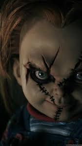

Chucky - O Boneco Assassino

Charles Lee Ray (também conhecido como O Estrangulador de Lakeshore, e apelidado de Chucky) é um personagem antagonista principal da franquia Child's Play. Chucky é retratado como um notório assassino em série cujo espírito habita um boneco Bonzinho e continuamente tenta transferir a sua alma do boneco para um corpo humano, enquanto causa terror a várias pessoas.
Você não teria medo de um boneco, teria?